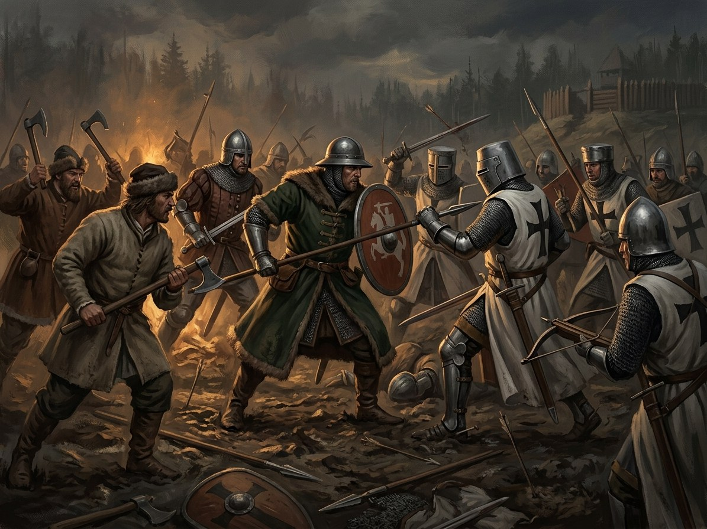

Battle of Grunwald / Žalgiris¶
What the chronicles say [Historical record]¶
Fought on 15 July 1410 between the armies of Jogaila and Vytautas and the Teutonic Order under Grand Master Ulrich von Jungingen near the villages of Grunwald, Stębark and Łodwigowo. Estimates of strength range from about 16,000 to 39,000 on the Polish-Lithuanian side and 11,000 to 27,000 on the Order’s side, and the sources are poor. Jungingen was killed; the Cronica conflictus says by Dobiesław of Oleśnica, Długosz says by Mszczuj of Skrzynno. Before the battle the Order’s heralds brought the king two naked swords as a taunt. Jogaila was heard at Mass after Mass; Długosz says Zbigniew Oleśnicki, the king’s secretary, saved him from the knight Lupold of Kökeritz. A Tatar contingent led by Jalal ad-Din fought beside the allies. The Lithuanian wing withdrew; historians disagree whether this was a planned feigned retreat (argued from a German letter published by Sven Ekdahl, 1963; disputed by Stephen Turnbull) or a rout, as Długosz presents it while crediting the Poles alone. Of the Order’s roughly 270 brothers on the field between 203 and 211 died. The siege of Marienburg was lifted on 19 September; the First Peace of Thorn of February 1411 gave Dobrzyń to Poland, Samogitia to Lithuania for the lifetimes of the two rulers, and a silver indemnity. See Wikipedia, Battle of Grunwald, and the Banderia Prutenorum.
Battle of Grunwald / Žalgiris

Battle of Grunwald / Žalgiris · event¶
Tipas |
įvykis |
Metai |
1410-07-15 |
Status |
Istoriniai duomenys |
Knyga |
|
Pastaba |
Battle of Grunwald (15 July 1410): allied Polish-Lithuanian triumph over the Teutonic Order. |
Where: Žalgiris (Grunwald) (on the map)
What really happened [The saga’s invention]¶
The eve of the battle is the lantern: the flame leaves Trakai for the first time, in a horn lantern carried by Žiežirba, and Vytautas opens it before a single Medvėgalis žynys and swears the thunder-oath to Perkūnas on Kęstutis’s sword; an oath on a claimed man’s name binds the Force too. In the morning the wolves lead pursuing knights into bog and wood when the Lithuanian wing withdraws; Galminas becomes the wood-skinned beast and the Root-Mother takes her harvest. When Jungingen falls the Iron Saint breaks, the Riders of the Reise scream on every road, and lightning stands on the field. The Medvėgalis žynys dies. In autumn an oak and hazel grove grows through the graves.
Consequences¶
Caused by the Union of Vilnius and Radom, which allied the cousins. It leads to the Union of Horodło (1413). The saga’s price is that the victory changes nothing for the gods: the gods remain unbound and Samogitia will be baptised.
Dramatisation¶
Book III ch. 15 „Tiltas per Vyslą“ (Žiežirba), ch. 16 (Eglė), ch. 17 „Žibintas“ (the Medvėgalis žynys; night 14–15 July), ch. 18 „Du Kalavijai“ (Zawisza Czarny; the morning), ch. 19 „Traukimasis?“ (Rūdis), ch. 20 „Geležies Mirtis“ (Vytautas; the afternoon), ch. 21 „Kruvini Laužai“ (Ona by letter and Vytautas; the night), ch. 23 „Galmino Giraitė“ (Eglė; autumn). Midsummer heat.
Ryšiai
Caused by: Peace of Raciąż; Marquard insults Birutė — A truce, not a settlement. · Pontoon bridge over the Vistula at Czerwińsk · Union of Vilnius and Radom
Causes: Union of Horodło; Samogitian baptism begins
Location: Žalgiris (Grunwald)
Participants: Galminas · Jogaila · Marquard von Salzbach — Komtur of Brandenburg; beheaded afterwards by Vytautas. · Ulrich von Jungingen · Vytautas
Sąsajos¶
graph LR
ev_czerwinsk_bridge["Pontoon bridge over the Vistula at Czerwińsk"]
ev_grunwald["Battle of Grunwald / Žalgiris"]
ev_horodlo["Union of Horodło; Samogitian baptism begins"]
ev_raciaz_1404["Peace of Raciąż; Marquard insults Birutė"]
ev_vilnius_radom["Union of Vilnius and Radom"]
galminas["Galminas"]
grunwald["Žalgiris (Grunwald)"]
jogaila["Jogaila"]
jungingen["Ulrich von Jungingen"]
marquard["Marquard von Salzbach"]
vytautas["Vytautas"]
ev_grunwald -->|Location| grunwald
ev_grunwald -->|Causes| ev_horodlo
ev_vilnius_radom -->|Causes| ev_grunwald
vytautas -->|Took part in| ev_grunwald
jogaila -->|Took part in| ev_grunwald
jungingen -->|Took part in| ev_grunwald
galminas -->|Took part in| ev_grunwald
ev_raciaz_1404 -->|Causes| ev_grunwald
marquard -->|Took part in| ev_grunwald
ev_czerwinsk_bridge -->|Causes| ev_grunwald
style ev_grunwald stroke-width:3px